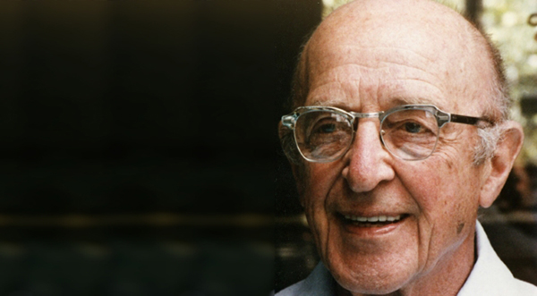

CARL RANSOM ROGERS (Oak Park, Illinois, Estados Unidos, 8 de enero de 1902 - San Diego, California, Estados Unidos, 4 de febrero de 1987) psicólogo estadounidense de gran influencia, que junto a Abraham Maslow, estableció el enfoque humanista en el campo de la psicología.
Participó activamente en el desarrollo de la terapia no directiva, mejor conocida como terapia centrada en el cliente, la cual renombró como terapia centrada en la persona. Esta teoría es conocida por sus siglas en inglés PCA “Person-Centered Approach” o enfoque centrado en la persona. Sus teorías abarcan no sólo las interacciones entre el terapeuta y el cliente, sino que también se aplican a todas las interrelaciones humanas. La terapia rogeriana contrasta con las perspectivas psicológicas freudianas y las sociales de Alfred Adler y de Albert Bandura, por el uso preferente de la empatía para lograr el proceso de comunicación entre el cliente y el terapeuta o, por extensión, entre un ser humano y otro.
Algunas de sus obras son: El tratamiento clínico del niño problema (1939); Orientación Psicológica y Psicoterapia (1942/1978); Psicoterapia centrada en el cliente (1951); El proceso de convertirse en persona (1961); Una afirmación apasionada (1969); Libertad de aprender (1969); Psicoterapia y relaciones humanas (1971); Psicoterapia centrada en el cliente (1972); El matrimonio y sus alternativas (1972); El poder de la persona (1977); Orientación psicológica y psicoterapia (1978); Persona a persona (1980); El Camino del Ser (1980) y La persona como centro (1981)